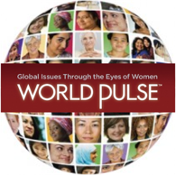
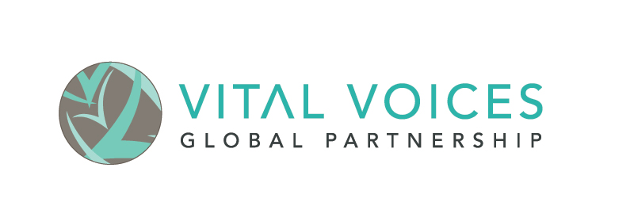
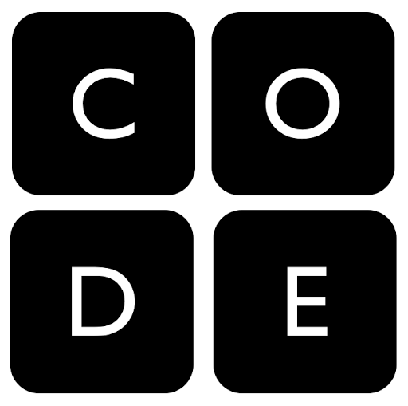
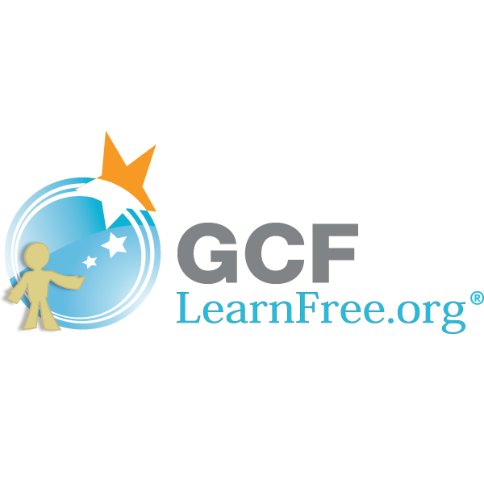
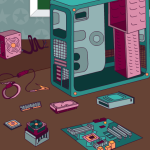
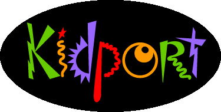
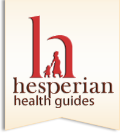

Computers for Girls
On this page you will find links to resources that are on the Internet. Other good information can be found on this computer and does not need an Internet connection.
Potential & Growth
 |
Catapult is a "crowd sourcing" web site where women can seek financial support for projects in their communities. Funds come from individuals and groups who want to support your work. You can access Catapult here. Audience: 14-18 years old |
|
Global network of teachers and youth use the Internet to collaborate on projects to enhance learning and make a difference in the world on iEarn. You can access the iEarn training here. Audience: 5-18 years old |
|
|  |
WorldPulse is an action media network powered by women from 190 countries. Through programs (online communities, magazine and online campaigns), WorldPulse seeks to lift and unite women's's voices to accelerate their impact for the world. Click here to enter the site. Audience: older teens and adults |
|
UNGEI is the UN Girls Education Initiative. They provide many good sources of information for teachers and administrators on developing programs for girls' educations, which you can access here. Audience: 14-18 years old |
|
|  |
Vital Voices highlights the women who have overcome obstacles to make a difference in the world. Hear and watch their stories. Audience: 14-18 years old |
Science, Technology, Engineering & Math
Science
 |
Web Adventures links to six interactive adventures in science where you will help solve a problem. They are:
Virtual Clinical Trials Audience: 12-18 years old |
Technology
|  |
Code.org provides tools to help students learn computer coding. A good collection of tools can be found here. Audience: 8-18 years old |
|
Codecademy offers free online course on HTML/CSS, Javascript, jQuery, Python, Ruby, PHP, and various APIs Audience: 14-18 years old |
|
|  |
GCF Learn Free hosts a nice colllection of online learning tools in mostly technology and math. Audience: 8-18 years old |
 |
Rails Girls aim to give tools and a community to women to understand technology and to build their ideas. They offer workshops and tools to download to learn programming in Ruby on Rails. Audience: 14-18 years old |
|  |
Computer Science (CS) Is Fun offers a large variety of online actitivities that teach programming to students. All activities are grouped by age. Audience: 6-18 years old |
 |
CoderDojo is an international group of coding clubs for youth. Audience: 14-18 years old |
Engineering
Math
|  |
Kidport has many offers lots of "think-and-learn" math activities for grades K-8. There are also links to information from other subjects, such as English, history, and science. Audience: 5-13 years old |
Health
|  |
Hesperian has written a number of helpful books that guide people who may not have easy access to doctors and other medical advice. To get the latest versions of these books, click here Audience: 14-18 years old |